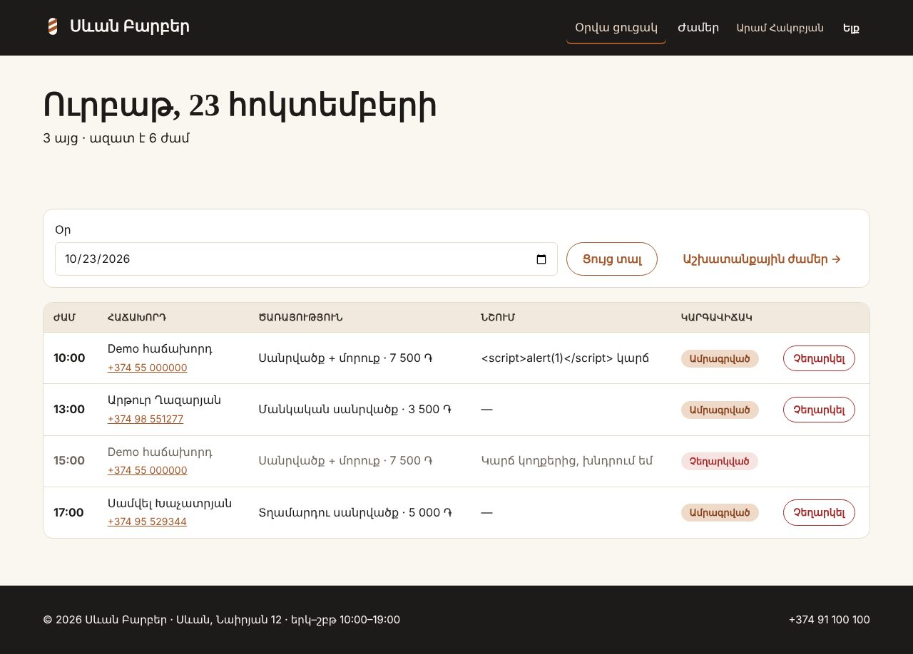
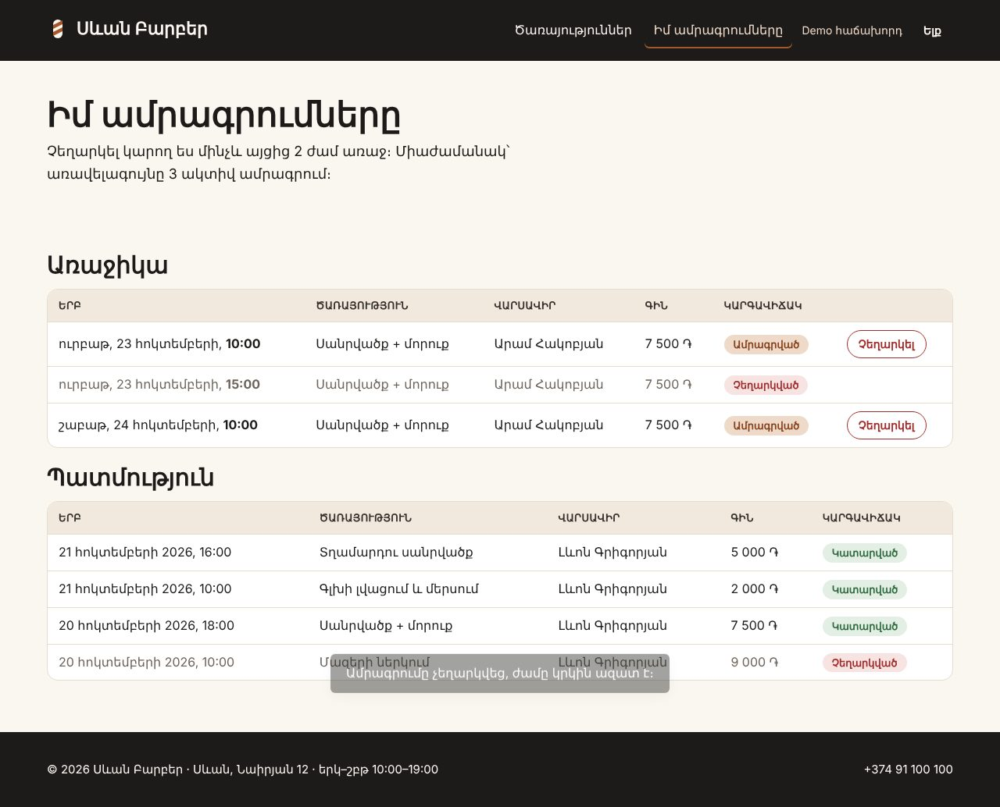

Վերջնական նախագիծ · շաբաթ 3 / 4 · ստուգակետ 3
Այս շաբաթ կայքը դառնում է անվտանգ և «խելացի»։ Ամենաշատ միավորները (ֆունկցիոնալություն և անվտանգություն՝ 40) հավաքվում են հենց այստեղ, և պաշտպանության հարցերի կեսը կլինի այս շաբաթվա կոդի մասին։
Ամենածանր շաբաթը։ Կայքը գիտի, թե ով է այցելուն, և ամեն դեր տեսնում և անում է միայն իրենը։ «Դժվար ֆունկցիան» աշխատում է և փորձարկված է եզրային դեպքերով։ Երկու գործողություն աշխատում է առանց վերբեռնման։ Եվ կայքը առաջին անգամ հրապարակված է, թեկուզ անավարտ։


| # | Ինչ ես անում | Դաս |
|---|---|---|
| 1 | Fortify․ մուտք, (գրանցում՝ ամենացածր դերով), քո Blade շաբլոնները, LoginResponse՝ ըստ դերի | PHP 16, 21 |
| 2 | Gate-եր կամ Policy․ ուղիների խմբեր middleware('can:…')-ով, գրառման մակարդակում՝ Gate::authorize կոնտրոլերում | PHP 21 |
| 3 | «Դժվար ֆունկցիան» ⭐․ կանոնը՝ բազայում, եթե հնարավոր է (UNIQUE, տրանզակցիա, lockForUpdate) | PHP 8, 11 |
| 4 | JSON endpoint API Resource-ով․ միայն այն դաշտերը, որ պետք են JS-ին | PHP 17, 20 |
| 5 | Երկու JS ֆունկցիա fetch-ով․ response.ok, 403/422/419, role="status", textContent | JS 14, 20 · PHP 17 |
| 6 | Ստուգիր առանց JS-ի․ նույն գործողությունները՝ ֆորմաներով | PHP 17 |
| 7 | Ամեն դերի սահմանը՝ curl-ով կամ DevTools-ով, ոչ միայն «կոճակը չի երևում» | PHP 16, 21 |
| 8 | Առաջին deploy-ը | PHP 22 |
public function book(User $client, TimeSlot $slot, Service $service, ?string $note = null): Booking
{
if ($slot->starts_at->isPast()) {
throw ValidationException::withMessages(['slot_id' => 'Այս ժամն արդեն անցել է։ Ընտրիր ուրիշը։']);
}
return DB::transaction(function () use ($client, $slot, $service, $note) {
// Հաճախորդի տողի կողպում․ նույն հաճախորդի երկու միաժամանակյա հարցումները հերթով են հաշվում
// ակտիվ ամրագրումները, ուստի 3-ի սահմանը չի շրջանցվի երկու ներդիրով — PHP Դաս 11
User::whereKey($client->id)->lockForUpdate()->first();
if ($client->bookings()->upcoming()->count() >= self::MAX_ACTIVE) {
throw ValidationException::withMessages([
'slot_id' => 'Կարող ես ունենալ առավելագույնը ' . self::MAX_ACTIVE . ' ակտիվ ամրագրում։ Չեղարկիր մեկը կամ սպասիր այցին։',
]);
}
$booking = new Booking();
$booking->user_id = $client->id;
$booking->time_slot_id = $slot->id;
$booking->active_slot_id = $slot->id; // ⭐ UNIQUE
$booking->service_id = $service->id;
$booking->price = $service->price; // գինը այս պահին․ հետո փոխվելը չի ազդի
$booking->note = $note;
$booking->status = 'booked';
try {
$booking->save();
} catch (UniqueConstraintViolationException) {
// Ինչ-որ մեկը մեզնից մի քանի միլիվայրկյան առաջ ամրագրեց նույն ժամը
throw ValidationException::withMessages(['slot_id' => 'Այս ժամը հենց նոր զբաղեցրեցին։ Ընտրիր ուրիշը։']);
}
return $booking;
});
}Կրկնակի ամրագրումը արգելում է UNIQUE-ը․ դա կանոն է մեկ տողի մասին, և բազան այն պահում է ավելի հուսալի, քան ցանկացած PHP ստուգում։ «Առավելագույնը 3»-ը կանոն է մի քանի տողի մասին, UNIQUE-ը այստեղ չի օգնի, ուստի տրանզակցիայում կողպվում է հաճախորդի տողը, և նույն հաճախորդի հարցումները հաշվում են հերթով։
public function cancel(User $user, Booking $booking): Response
{
if (! $booking->isBooked()) {
return Response::deny('Այս ամրագրումն արդեն փակված է։');
}
if ($user->isAdmin()) {
return Response::allow();
}
if ($user->isStaff()) {
return $booking->slot->staff_id === $user->id
? Response::allow()
: Response::deny('Սա ուրիշ վարսավիրի ամրագրումն է։');
}
if ($booking->user_id !== $user->id) {
return Response::deny('Սա քո ամրագրումը չէ։');
}
return $booking->slot->starts_at->gt(now()->addHours(BookingService::CANCEL_HOURS))
? Response::allow()
: Response::deny('Չեղարկել կարելի է մինչև այցից ' . BookingService::CANCEL_HOURS . ' ժամ առաջ։ Զանգիր մեզ։');
}
/**public function cancel(Request $request, Booking $booking)
{
$booking->load('slot');
$check = Gate::inspect('cancel', $booking);
if ($check->denied()) {
return $request->expectsJson()
? response()->json(['message' => $check->message()], 403)
: back()->with('error', $check->message());
}
$this->bookings->cancel($booking);// ---------- Հաճախորդ ----------
// Մուտք չգործածը կուղարկվի /login, իսկ հետո՝ հետ (redirect()->intended)
Route::middleware('auth')->group(function () {
Route::get('/my/bookings', [BookingController::class, 'index'])->name('bookings.mine');
Route::post('/bookings', [BookingController::class, 'store'])->name('bookings.store'); // can:book՝ BookingRequest-ում
Route::patch('/bookings/{booking}/cancel', [BookingController::class, 'cancel'])->name('bookings.cancel'); // BookingPolicy::cancel
});
// ---------- Վարսավիր և ադմին ----------
Route::middleware(['auth', 'can:staff-area'])->prefix('staff')->name('staff.')->group(function () {
Route::get('/', [StaffController::class, 'index'])->name('index');
Route::patch('/bookings/{booking}/done', [StaffController::class, 'complete'])->name('complete');
Route::get('/slots', [SlotController::class, 'index'])->name('slots');
Route::post('/slots', [SlotController::class, 'store'])->name('slots.store');
Route::delete('/slots/{slot}', [SlotController::class, 'destroy'])->name('slots.destroy');
});
// ---------- Միայն ադմին ----------
Route::middleware(['auth', 'can:manage-services'])->prefix('admin')->name('admin.')->group(function () {
Route::get('/bookings', [AdminBookingController::class, 'index'])->name('bookings.index');
Route::get('/services/trashed', [AdminServiceController::class, 'trashed'])->name('services.trashed');
Route::patch('/services/{id}/restore', [AdminServiceController::class, 'restore'])->name('services.restore');
Route::resource('services', AdminServiceController::class)->except('show');
});public function toArray(Request $request): array
{
return [
'id' => $this->id,
'time' => $this->starts_at->format('H:i'),
'starts_at' => $this->starts_at->toIso8601String(),
'staff' => ['id' => $this->staff->id, 'name' => $this->staff->name],
];
}{
"data": [
{
"id": 38,
"time": "11:00",
"starts_at": "2026-10-23T11:00:00+04:00",
"staff": {
"id": 2,
"name": "Արամ Հակոբյան"
}
},
{
"id": 39,
"time": "12:00",
"starts_at": "2026-10-23T12:00:00+04:00",
"staff": {
"id": 2,
"name": "Արամ Հակոբյան"
}
}
],
"meta": {
"date": "2026-10-23",
"label": "ուրբաթ, 23 հոկտեմբերի",
"count": 7
}
}/** Ռադիո կոճակներ՝ նույն markup-ով, ինչ Blade-ում։ textContent՝ ոչ innerHTML (անուններն օգտագործողից են) */
function render(slots) {
const legend = list.querySelector('legend');
list.replaceChildren(legend);
for (const slot of slots) {
const wrap = document.createElement('div');
wrap.className = 'slot';
const input = document.createElement('input');
input.type = 'radio';
input.name = 'slot_id';
input.id = `slot-${slot.id}`;
input.value = slot.id;
const label = document.createElement('label');
label.htmlFor = input.id;
label.append(slot.time);
const small = document.createElement('small');
small.textContent = slot.staff.name;
label.append(small);
wrap.append(input, label);
list.append(wrap);
}
}const response = await fetch(form.action, {
method: 'PATCH',
headers: { Accept: 'application/json', 'X-CSRF-TOKEN': token },
});
if (response.status === 419) {
location.reload(); // token-ը հնացել է․ նոր էջ՝ նոր token
return;
}
const body = await response.json();POST /bookings → /my/bookings ← 1 հաջողություն
POST /bookings → /services/sanrvatsq-moruq × 5 ← «Այս ժամը հենց նոր զբաղեցրեցին։ Ընտրիր ուրիշը։»
SELECT COUNT(*) FROM bookings WHERE active_slot_id = 171; → 1Ամբողջ ստուգումը՝ docs/smoke-test.md։ Օրինակը աշխատեցված է իրական Laravel 12-ի վրա՝ 83 ավտոմատ ստուգումով (բոլոր դերերը, 403/419/422/429, JS, առանց JS-ի, 360px, 6 զուգահեռ հաճախորդ նույն ժամի համար)։
/admin/… → 403, առանց մուտքի → /login| Սխալ | Ինչ է լինում | Ինչպես ճիշտ |
|---|---|---|
| «Ստուգիր, ապա ավելացրու» PHP-ում | Երկու միաժամանակյա հարցում երկուսն էլ անցնում են ստուգումը | UNIQUE բազայում + catch (UniqueConstraintViolationException) |
Միայն @can Blade-ում | Կոճակը չկա, բայց curl-ով գործողությունը աշխատում է | Policy/Gate կոնտրոլերում, @can-ը՝ միայն հարմարության համար |
Gate::authorize-ը fetch-ի համար | JS-ը ստանում է HTML 403 էջ և response.json()-ը ընկնում է | Gate::inspect() + expectsJson()՝ JSON հաղորդագրություն |
«Իմ գրառումները»՝ ?user=5-ով | Փոխում ես թիվը և տեսնում ուրիշինը | Ֆիլտրը սերվերում՝ $request->user()-ից |
innerHTML API-ի տվյալով | Օգտագործողի անունը <img onerror>-ով դառնում է XSS | textContent, createElement |
| API Resource առանց սահմանափակման | toArray()-ը տալիս է email, հեռախոս, password-ի hash | Միայն պետք դաշտերը՝ ձեռքով |
Blade-ի {{ }} JS տողում (confirm('{{ $name }}')) | '-ով անունը կոտրում է JS-ը | JS-ում օգտագործողի տվյալ չդնել կամ @js($name) |
| Առաջին deploy-ը չորրորդ շաբաթում | Hosting-ի խնդիրները համընկնում են պաշտպանության հետ | Deploy հիմա, թեկուզ անավարտ |
| Եթե խրվել ես | Նայիր |
|---|---|
| Fortify, Gate-եր, դերեր | PHP Դաս 21, Տնային 21 |
| Տրանզակցիա, UNIQUE | PHP Դաս 11, Տնային 22՝ գնահատականը UNIQUE-ով |
| fetch, CSRF header, progressive enhancement | PHP Դաս 17, ՏեխնոՄարկետ · Laravel՝ public/js/cart.js |